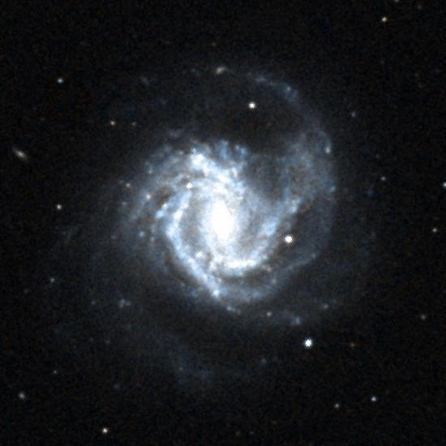
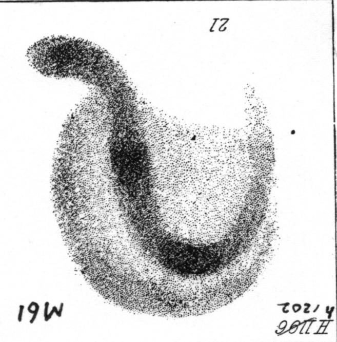
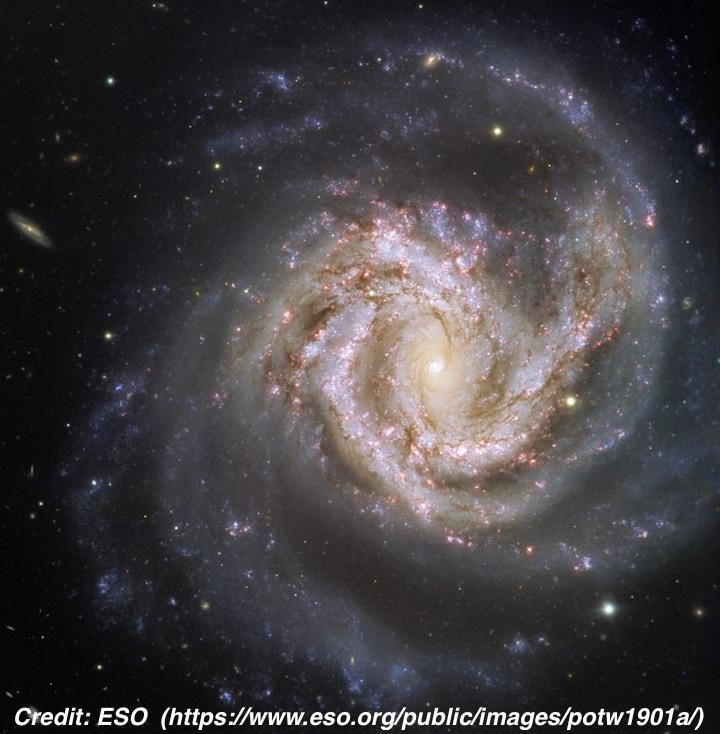

M61
- Name: M61
- Aliases: NGC 4303 = UGC 7420 = MCG +01-32-022 = CGCG 042-045 = PGC 40001
- RA: 12 21 54.9
- Dec: +04 28 25 (Virgo)
- Type: SAB(rs)bc; Sy2
- Size: 6.5'x5.8'
- Mag: V = 9.7, B = 10.2
- Distance: ~50 million l.y. (Virgo cluster)
- NGC description: very bright, very large, very small bright middle which is starlike, bi-nuclear.
Colorized DSS2 image:

I'm surprised this gorgeous spiral hasn't been featured as an Object of the Week. I hope I just didn't miss it!
Italian astronomer Barnaba Oriani discovered M61 on 5 May 1779 while observing the Comet of 1779. Messier independently found it the same night but initially mistook it for the comet, finally recognizing it was a nebula on 11 May after observing it on several nights.
William Herschel found M61 again on 17 Apr 1786 (sweep 553), assumed it was new, and catalogued it as I-139 with the summary description (2 observations) "extremely bright; very bright nucleus, resolvable, 6 or 7' dia." John Herschel observed M61 on 3 consecutive sweeps in 1828, making a strange observation on 10 April: "very faintly bicentral. The two nuclei 90" distance in position angle 45 to 50° north-following." This observation was the source of the NGC description "bi-nuclear"
Lord Rosse's assistant Bindon Stoney discovered the spiral structure on 1 Mar 1851 when he observed it through the 72-inch. He reported "spiral, 2 knots, centre bright." The following sketch was made through the 72-inch on 14 Apr 1852 and clearly shows the bar and main spiral arms, along with two brighter regions in the arms. I've rotated the sketch so north is at the top so you can compare it with the DSS image above.

The galaxy is classified as a SAB(rs)bc, which suggests only a weak bar, but visually that's not the case as you can tell from Stoney's sketch.
M61 is quite a supernova factory -- it has hosted 7 supernovae in the last century, with 6 of these since 1961. In fact, M61 holds the record for the most in a Messier galaxy during the last century (NGC 6946 is the record holder with 10).
M61 has a LINER-type AGN or stellar cluster at its core and has also been classified as a Sy2 nucleus. A 1997 study by Colina et al: "Nuclear star-forming structures and the starburst–active galactic nucleus connection in barred spirals: NGC 3351 and NGC 4303" also found a nuclear spiral structure with starburst activity...
"A high-resolution Hubble Space Telescope WFPC2 F218W UV image of the barred spiral NGC 4303 [M61] reveals for the first time the existence of a nuclear spiral structure of massive star-forming regions all the way down to the UV-bright unresolved core of an active galaxy. The spiral structure, as traced by the UV-bright star-forming regions, has an outer radius of 225 pc and widens as the distance from the core increases. The UV luminosity of NGC 4303 is dominated by the massive star-forming regions, and the unresolved LINER-type core contributes only 16% of the integrated UV luminosity. The nature of the UV-bright LINER-type core—stellar cluster or pure AGN—is still unknown."
A 2002 study by Colina et al using the HST titled "Detection of a Super-Star Cluster as the Ionizing Source in the Low-Luminosity Active Galactic Nucleus NGC 4303" pinned down the source of the AGN...
"Hubble Space Telescope (HST) ultraviolet Space Telescope Imaging Spectrograph (STIS) imaging and spectroscopy of the low-luminosity active galactic nucleus NGC 4303 have identified the previously detected UV-bright nucleus of this galaxy as a compact, massive, and luminous stellar cluster. The cluster with a size of 3.1 pc .. is identified as a nuclear super-star cluster (SSC) like those detected in the circumnuclear regions of spirals and starburst galaxies. "
A 2007 study by Pastorini et al: "Supermassive black holes in the Sbc spiral galaxies NGC 3310, NGC 4303 and NGC 4258" found a black-hole mass of 5 million solar masses.
M61 is one of the easiest galaxies to observe spiral structure in a 12-inch or larger scope. Here are my brief notes using a 13-inch and 18-inch dobsonians --
18" (5/12/07): spiral structure is easily visible. One arm is attached at the north end and sweeps towards the northeast and then hooks to the south along the east side. A bright knot ([HK83] 135) is within the arm at the northeast end. A second broader arm is attached at the south end and sweeps towards the southwest and then hooks towards the north on the west side. The central region contains a bright, stellar nucleus.
13.1" (5/26/84): very bright, large, bright stellar nucleus. Two spiral arms are faintly visible; one arm is attached south of the nucleus and winds towards the west and then north. A slightly brighter arm is attached north of the nucleus and winds along the east side towards the south.
Through a larger scope the view is truly spectacular -- these were taken through Jimi's 48-inch both in 2013 and earlier this month during the Texas Star Party. I also had a look at M61 through McDonald Observatory's 82-inch. Wow!!
48" (4/5/13): and 5/1/19) at 375x and 488x, the visible structure was similar to photographic detail! A bright bar extends north-south and is sharply concentrated with a very small, round, intense nucleus. A bright arm is attached right at the north side of the bar and sweeps counterclockwise 180° to the south end, along the east side. A brighter region was visible in the arm east of the nucleus, which include HII regions NGC 4303:[HK83] #35/39/41/45/49, from the Hodge-Kennicutt "Atlas of H II regions in 125 galaxies". At the south end, this arm dims rapidly but is followed much further southwest in the outer halo and passes just north of a mag 14.0 star that is 2.4' SW of center.
The western arm was attached at the southern end of the bar and swept north on the west side. A bright, elongated patch is on the southern end of this arm, which includes #155, ~45" SSW of the nucleus. The arm extended inside a mag 14 star in the west side of the halo [1.2' WSW of center] and then sharply dimmed, but extended towards #242, a nearly detached faint knot 1.2' WNW of center.
A partial outer arm, not attached to the core, was easily visible on the north side, angling southwest to northeast. This short arm contains HII region #135, a very bright, 15" knot, 1.2' NNE of center. The arm dimmed suddenly on the northeast end but a diffuse extension continued to wrap counterclockwise to the southeast at the edge of the eastern halo.

As always,
"Give it a go and let us know!
Good luck and great viewing!"
Steve's follow-up — May 19th, 2019, 11:28 PM
By the way, I mentioned that John Herschel called M61 "very faintly bicentral. The two nuclei 90" distance..."
I was confused what he was talking about as there is only a single nucleus, but thinking about it further I'm pretty sure his "two nuclei" refer to the actual nucleus and the bright knot I noted in my 18-inch observation ([HK83] 135)!
Steve's follow-up — May 21st, 2019, 07:51 PM
For lists of galaxies with "Vorontsov-Velyaminov Rows" see the 2001 paper "Galaxies with Rows" by Chenin and the 2017 follow-up survey by Butenko and Khoperskov "Galaxies with Rows: A new catalog"